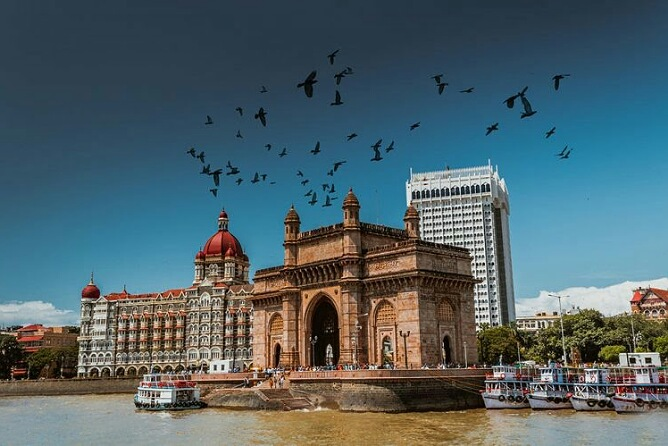
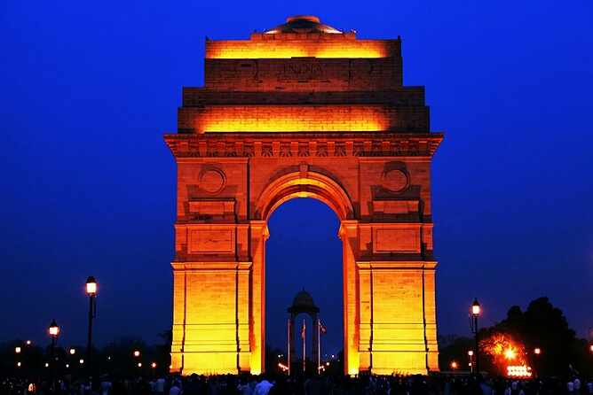
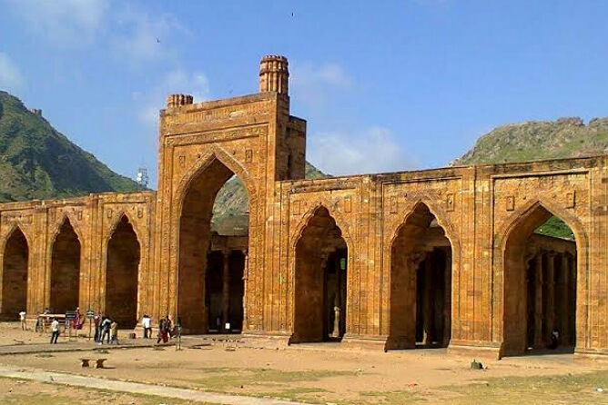

HOBBIES
Playing cricket and volleyball
Watching action movies
Solving puzzles that i come across any platforms
Travelling and visiting new places once in a year
Visited some of the most famous places in India
Below are the places that i have visited over the past few years
TAJ MAHAL
Agra, Uttar Pradesh
Agra, Uttar Pradesh
RED FORT
Delhi
Delhi

LOTUS TEMPLE
Delhi
Delhi

GATEWAY OF INDIA
Mumbai, Maharashtra
Mumbai, Maharashtra
HOWRAH BRIDGE
Kolkata, West Bengal
Kolkata, West Bengal

INNDIA GATE
Delhi
Delhi
QUTUB MINAR
Delhi
Delhi

NATIONAL ZOOLOGICAL PARK
Delhi
Delhi
JAMA MASJID
Delhi
Delhi

ADHAI DIN KA JHONPRA
Ajmer, Rajasthan
Ajmer, Rajasthan

HUMAYUN'S TOMB
Delhi
Delhi
FATEHPUR SIKRI
Uttar Pradesh
Uttar Pradesh